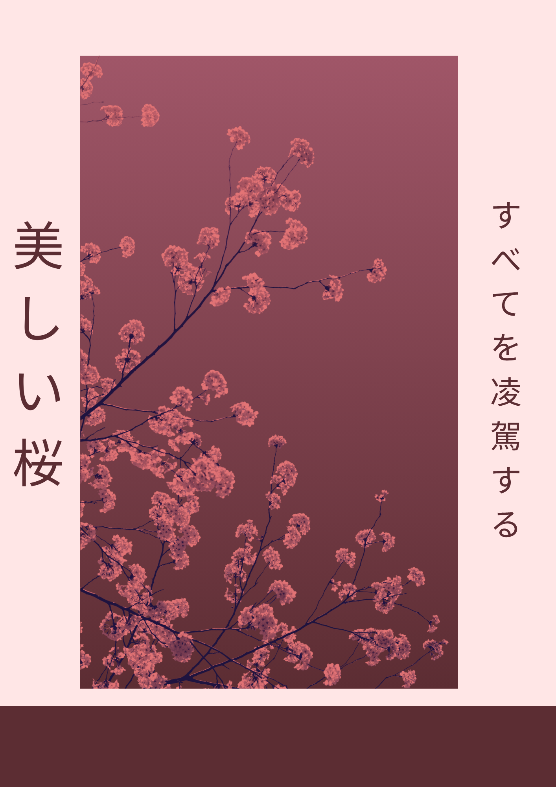

3+
Design projects
I am a creative student who enjoys visual design, digital storytelling, and simple technology projects. I am fluent in Indonesian and English, and I like combining aesthetics with practical problem solving.


I am the kind of person who enjoys making ideas visually stronger. I like graphic design because it lets me turn concepts into something clear, attractive, and memorable. I also enjoy learning practical technology, especially in the Internet of Things field.
My experience in IoT is still moderate, but I have contributed to small projects such as a miniature greenhouse/smartfarm and an automatic cat feeder. These experiences helped me understand how design, automation, and user needs can be connected in daily life.

A mood-driven poster concept using soft gradients and floral visual storytelling.

An experimental design based on color harmony and modern graphic composition.

An abstract visual piece exploring texture, depth, and layered effects in design.
Contribution on a small-scale smart farming system focusing on plant monitoring.
A practical automation design to help manage feeding routines with simple mechanisms.
Designing a consistent digital identity with a modern and minimal approach.
Currently studying as a student focused on technology and design-related skills.
Created a beautiful website for a school project.
Helped with a project involving a miniature greenhouse with multiple sensors.
Created 15 posters for the independence day of Indonesia.